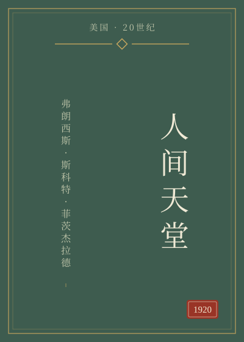

人间天堂
一、基本信息
| 作者 | 菲茨杰拉德 |
|---|---|
| 成书/出版 | 1920年（作者页 B050/B023 口径：人间天堂（1920）） F. Scott Fitzgerald — Encyclopaedia Britannica (by Arthur Mizener)（百科全书） |
| 国别/地区 | 美国 |
| 时代 | 现当代 · 20世纪 |
| 体裁 | 长篇小说 |
| 语言 | 英语 |
《人间天堂》成长结构图（主题·结构图）
二、创作背景
作者页（B050/B023）：菲茨杰拉德 major_works 载'人间天堂（1920）'——其处女作（作者页定位，详见 gaicibi 条核对）。
题材（通说待核）：艾莫里的普林斯顿岁月与'自我主义者'的成长——战后美国青年的精神图谱。
三、内容脉络
艾莫里·布莱恩：普林斯顿、战争、初恋与幻灭（通说待核）。
四、主要人物表
| 人物 | 身份 | 说明 |
|---|---|---|
| 艾莫里·布莱恩 | 青年 | 自传性（通说待核） |
| 罗莎琳德 | 名媛 | （通说待核） |
五、主题与艺术特点
- 爵士时代的开篇（通说）。
- '自我主义者'的成长（通说待核）。
- 普林斯顿与名媛文化（通说待核）。
六、影响与评论
- 作者页：菲茨杰拉德处女作（B050/B023 作者页口径）。
F. Scott Fitzgerald — Encyclopaedia Britannica (by Arthur Mizener)（百科全书） - 使24岁的作者一夜成名（通说待核）。
F. Scott Fitzgerald — Encyclopaedia Britannica (by Arthur Mizener)（百科全书）
七、阅读建议
难点
- 青春文体（诗+信+日记混合）。
- 1910年代大学文化。
- 《人间天堂》（人民文学出版社/上海译文版本，通说待核）。
- 英文原版（公有领域渐近）。
菲茨杰拉德起点，先于《盖茨比》。
八、待核实
- 1920年3月出版（Scribner说）与一周售罄说待核。
- 艾莫里/罗莎琳德人名核对。
- 自传成分（作者与泽尔达）待核。
本页主要来源
- F. Scott Fitzgerald — Encyclopaedia Britannica (by Arthur Mizener)（百科全书）
- The Great Gatsby — Encyclopaedia Britannica（百科全书）
菲茨杰拉德的其他收录作品：了不起的盖茨比